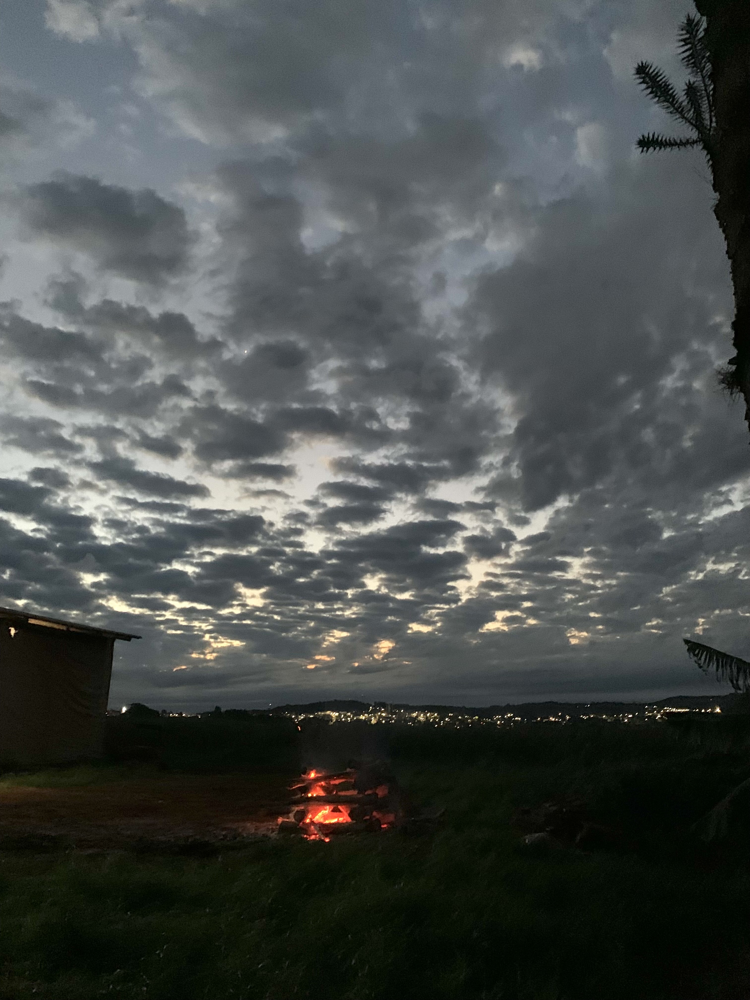
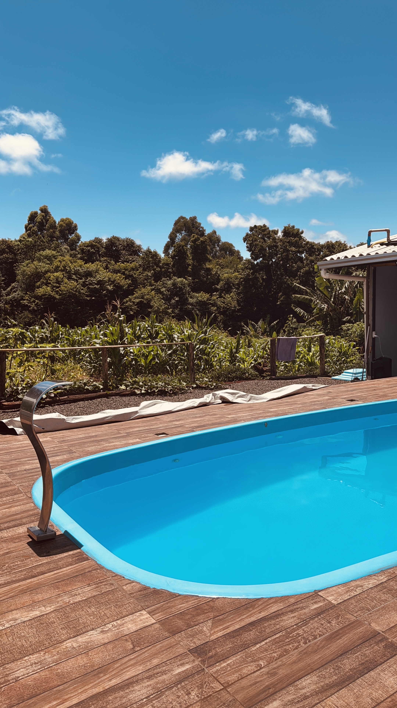

O Papel da Energia no Desenvolvimento Rural
A energia é um componente vital para o crescimento sustentável no campo. Com o avanço das tecnologias, o acesso à energia limpa e eficiente transforma a agricultura, promovendo maior produtividade, redução de custos e cuidado ambiental.
Além disso, a eletrificação rural melhora a qualidade de vida das comunidades, possibilitando o uso de equipamentos modernos e o acesso à informação digital.
Tecnologias e Fontes Renováveis
A energia solar tem se mostrado uma das soluções mais promissoras para o meio rural. Os painéis solares podem ser instalados em propriedades agrícolas para fornecer eletricidade limpa, reduzindo a dependência de combustíveis fósseis e os custos operacionais.
Sistemas de bombeamento solar para irrigação e iluminação em áreas remotas são exemplos de aplicações práticas que trazem benefícios econômicos e ambientais.
A energia eólica aproveita o vento para gerar eletricidade. Pequenas turbinas podem ser instaladas em propriedades rurais para fornecer energia para equipamentos e sistemas, promovendo a independência energética.
Apesar de depender das condições locais, a energia eólica é uma alternativa sustentável que complementa outras fontes renováveis.
A biomassa, proveniente de resíduos agrícolas e florestais, pode ser convertida em energia por meio de processos de queima controlada ou geração de biogás.
Essa prática contribui para a redução de resíduos, geração de energia e melhoria da sustentabilidade das propriedades rurais.
Desafios e Oportunidades
Apesar do grande potencial das fontes renováveis, ainda existem desafios para a sua implementação no campo, como o custo inicial, manutenção e a necessidade de capacitação técnica.
Por outro lado, o avanço das políticas públicas, incentivos fiscais e parcerias com empresas de tecnologia vêm abrindo novas oportunidades para ampliar o acesso à energia sustentável nas áreas rurais.
O Agrinho 2025 tem como objetivo promover o debate e a disseminação de conhecimento para superar esses obstáculos, incentivando a inovação e o desenvolvimento sustentável.